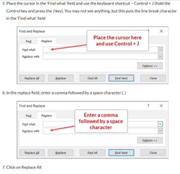

Code
#Check R version
sessionInfo() # your current version will display in the first line of the result
# Install and load installr package
install.packages("installr")
library(installr)
# Update R version
updateR()To maintain order, structure, consistency and transparency across the organization, standards for naming conventions and file management are important. The following are the standards must be used by Data Curators.
Each dataset that will be curated and published on the MDL must be downloaded from RIDL, checked, prepared, and anonymized on your local computer (i.e., using R as highlighted throughout this Handbook). Not all files associated with the curation will be stored on RIDL including the curation script, the disclosure risk assessment report, the MDL metadata population script and any files that will no longer be needed after the curation is finished. To maintain transparency within the organization, all files associated with this process are stored in a secure repository on the GDS – Data Curation private SharePoint space. The metadata of external datasets that are harvested for the MDL should also be stored in this folder.
Files are organized by region and country where the data was collected. Beyond this, each dataset has a dedicated main folder. The name of this folder is the same as the ‘Survey identifier’ (see next section). Within this folder, are a set of subfolders organized in a way so that anyone can easily retrace the steps of the curation process. They should be organized into folders using the logic below.
| Folder | Content |
|---|---|
| 0_data | All versions of the data. There should be at minimum three subfolders associated with the different versions: raw, clean and anonymous |
| 1_scripts | All scripts used in the curation of the dataset including the script(s) use for data check and preparation, anonymization and disclosure risk assessment script. |
| 2_documentation | The metadata script for the dataset as well as the supporting documents including the questionnaire, report and any other analytical pieces produced (e.g briefs, infographics, etc.). |
| 3_authorization | The final version of the disclosure risk assessment report and copy of the email from the Personal Data Controller providing or rejecting validation of the anonymization and authorization for release on the MDL1. |
Note that Data Curators are encouraged to use R projects, which facilitate the use of relative paths so that R scripts are easily used by multiple users on different machines. The R project should be stored in the main directory of the dataset establishing it as the root folder. See more details on this in section Software requirements and setup .
The dataset identifier (also referred to as a survey identifier by certain DDI compliant catalogues) is a unique code that can be used to identify any file associated with the dataset. For example, it will be the name of the folder on SharePoint where all working files related to the curation are stored. It is also the base for file names (see next section). The dataset identifier must:
not include any spaces or special characters except for underscores (_);
only include standard English letters in upper case and numbers;
separate the different components of the identifier (see below) with underscores2 (_); and
not share the same identifiers as another dataset.
The dataset identifier is made up of the following components in the order it is presented below:
Source: The source of the dataset (e.g. UNHCR)
Country code: ISO3 code of the country covered in the field (e.g. AFG for Afghanistan). See list of ISO3 codes here >>
Year: year to which data collection started, in the format yyyy (e.g. 2019)
Information type: short description of the information type (e.g. PDM, SENS, etc.).
Other specification (optional): if necessary, another field can be added to distinguish different datasets that would have otherwise the same identifier (e.g. a dataset comprised of multiple files, the same survey may be carried out in the same country and year but in different camps or times).
The following is an example identifier for a standardized expanded nutrition survey (SENS) undertaken by UNHCR in Zimbabwe in 2017 in the camp number 1: UNHCR_ZWE_2017_SENS_CAMP1.
An example of file types and their suffixes is shown in the following table:
| File type | Suffix |
|---|---|
| raw data | _data_raw_v0.1 |
| clean data | _data_clean_v1.1 |
| anonymous data | _data_anon_v2.1 |
| questionnaire | _questionnaire |
| report | _report |
| infographic | _infographic |
| map | _map |
| cleaning script | _script_clean |
| anonymization script | _script_anon |
| disclosure risk report | _dra_report |
As mentioned under scope, there are three version of a microdataset that are used and/or produced in the curation process. The file version in the RIDL and MDL metadata editor and attached to the file name should be as follows:
| File version | Extension |
|---|---|
| raw | v0.x |
| clean | v1.x |
| anonymous3 | v2.x |
So, for example, the first version of the clean data for a socio-economic assessment undertaken by UNHCR in Zimbabwe in 2017 in the camp number 1 would be UNHCR_ZWE_2017_SEA_CAMP1_data_clean_v1.1.csv and the anonymized version would be UNHCR_ZWE_2017_SEA_CAMP1_data_anon_v2.1.csv.
The dataset title should follow the naming convention used by UNHCR’s Operational Data Portal. Survey names in RIDL are preferably in English, however it is acceptable if they are in the language of the report and dataset. In the Microdata Library, the survey name should be in English. Guidance below.
Location: The title of the dataset should always begin with the location at either country or regional level. The location name (followed by a colon) should be added at the beginning of the title. For example: Uganda: Rhino Settlement Profile - April 2019, instead of Settlement Profile - Rhino - April 2019. In case the dataset refers to multiple countries or a situation, the name of the region or situation could be added, e.g. Burundi Situation: Population Dashboard - 30 April 2019.
Note that the country name should not be included when the dataset is uploaded to the MDL because it is automatically fetched from the metadata and would cause a repetition. In the case however that the dataset on MDL refers to a specific location within a country, the specific location should be included in place of the country name.
Title: The title of the dataset follows the location after a colon and should be descriptive of the type of content (survey, assessment, profiling exercise, etc.). As part of DDI-compliant metadata, and if the dataset has a title in a language different than English, an alternate title can be added in the original language.
Date: The year should be added at the end of the title. The full date should be added when two (or more) surveys, often belonging to a series, have the exact same title. The date, in a [Day] Month Year format should be added at the end of title, e.g. Lebanon: National Inter-Sector List - May 2019.
Capitalization: Titles and descriptions should be written in title case. This means only using capital letters for the principal words, e.g. Zambia: Sector Updates - July 2019.
Examples:
Zimbabwe: Socio-economic Assessment in Camp 1 – 2017
South Sudan Situation: Population Dashboard - April 2019
R and R Studio are the software packages used in the examples in this handbook. GDS SDS prefers Data Curators to use R to ensure the curation process is adequately documented, transparent, replicable and to avoid any compatibility issues. For example, data manipulation in MS Excel cannot be tracked because it does not include a script and Stata is a proprietary software not accessible to everyone.
Install R from https://cloud.r-project.org/ and R Studio from https://www.rstudio.com/products/rstudio/download/#download.
From time to time, you will need to update R. When using Windows, this can be done directly in RStudio using the installr package.
#Check R version
sessionInfo() # your current version will display in the first line of the result
# Install and load installr package
install.packages("installr")
library(installr)
# Update R version
updateR()The first step is to set up an R project. Using R projects facilitates your work to be easily reproduced by Data Providers and other Data Curators because it facilitates relative paths. See an article about it here.
To set up a project:
Firstly, make sure you have created a folder for your dataset that follows the structure and naming conventions outlined in the previous section.
Open R Studio and create a new project (File > New Project)
Select “Create Project from Existing Directory” and select the main directory of the dataset you created (Note: this will become the root directory from which all your paths will start). See example below:

Now anytime you work on that project, start by opening the project and then create your scripts (New File > R Script) or navigate to them from there.
Once you have installed RStudio, set up your project and started a new script you will also need to install any packages that you will use in your script. For anonymization, you will need the sdcMicro package. You should work directly in the RStudio interface, however the sdcMicro GUI application, which does not require writing R code, may be useful for testing or to those less familiar with R. That said, due to the limited functionality of the GUI application, Data Curators must eventually become familiar with R and interact with the sdcMicro package using the R interface.
Installing sdcMicro in R
# Install package
install.packages("sdcMicro")
# Load package
library(sdcMicro)
# Load sdcMicro GUI
sdcApp()Several other packages are used in the examples in this handbook for the curation process. They are listed in Annex – R packages. The following provides example code to install and load multiple packages at the same time.
Installing multiple packages in R
# Check what packages are installed on your computer
installed.packages()
# List of packages to install and load. Add more to list if needed. This manual assumes these packages are installed.
packages_needed <- c('your_package_name','another_package_name',
'and_another_package_name')
# Run function to install and update packages. If one of the packages shows up as FALSE, try to install again.
repos <- c(CRAN = 'https://cran.rstudio.com', CRANextra = 'https://macos.rbind.io')
install.packages(packages_needed[!packages_needed %in% row.names(installed.packages())],
dependencies = TRUE,
repos = repos)
update.packages(oldPkgs = packages_needed, ask = FALSE)
sapply(packages_needed, require, character.only=TRUE)Note There are many ways to complete a task in R, and a variety of packages that can be used to reach the same objective. The example code provided throughout this handbook may not be / is probably not the only way. For users who prefer different methods, use them. The most important point is that the task is completed, and the result is correct. Suggestions for more efficient methods are most welcome to microdata@unhcr.org.
Microdata on RIDL come in a variety of formats but are usually in at least .csv or .xls(x), and sometimes stata (.dta) or spss (.sav).
dat_raw <- read_csv('0_data/raw/file_name.csv')
# Import .xls or .xlsx using the readxl package
dat_raw <- read_excel('0_data/raw/file_name.xls',sheet='tab_name', na=c('', 'NA', 'missing')
dat_raw <- read_excel('0_data/raw/file_name.xlsx',sheet='tab_name')
# Import .dta and .sav files using the haven package
dat_raw <- read_dta('0_data/raw/file_name.dta')
dat_raw <- read_sav('0_data/raw/file_name.sav')Sometimes issues arise when importing the data into R. Below are some common issues and fixes, obviously not an exhaustive list.
Potential issues and solutions when importing data into R
A csv file contains accents or special characters such as é, ô, etc.: Specify the parameter encoding = ‘UTF-8’ in read_csv
An Excel file contains records with line breaks: R will misalign the data, creating new records that are part of another record. Using the readxl package should resolve this issue, however not always as it depends on the encoding of the source file. The line breaks can be removed directly in Excel using ‘find and replace’ (see below).

guess_max option can be used to increase the number of rows used to guess the variable type.Note that this practice was changed in September 2022. Prior to that, the authorization emails were stored in an “Authorizations” folder on the GDS-Data Curation SharePoint space and this is where they can be located.↩︎
Note that the information in each component should not be separated. For example, UNOCHA should be UNOCHA and not UN_OCHA↩︎
Note that following the Curation AI, all anonymous microdata referred to here have been cleaned before anonymized↩︎